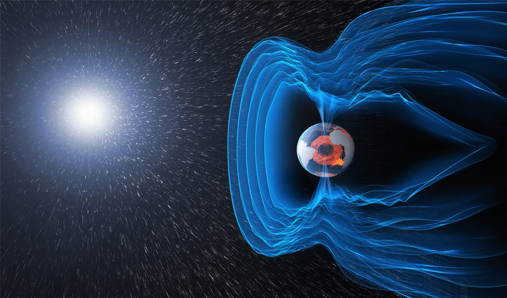

El magnetismo es una interacción fundamental de la naturaleza que surge de la presencia de cargas eléctricas en movimiento y de las propiedades cuánticas de las partículas subatómicas. Se manifiesta como fuerzas de atracción y repulsión entre materiales, así como en la generación de campos invisibles capaces de influir en la materia a distancia. A nivel físico, el magnetismo forma parte inseparable del electromagnetismo, descrito matemáticamente por las ecuaciones de Maxwell. Estos principios establecen que los campos eléctricos y magnéticos no son entidades separadas, sino aspectos diferentes de un mismo fenómeno que se propaga a través del espacio en forma de ondas electromagnéticas, las cuales incluyen la luz, las ondas de radio, los rayos X y muchas otras. El magnetismo está presente tanto a nivel microscópico —en los espines de los electrones— como en escalas colosales, como el campo magnético de la Tierra, el magnetismo solar o los campos generados en galaxias y cúmulos de galaxias. Gracias al magnetismo funcionan tecnologías esenciales como motores, generadores, transformadores, discos duros, sensores, satélites y sistemas de navegación.
El origen profundo del magnetismo se encuentra en la estructura del átomo. Los electrones poseen una propiedad cuántica denominada spin, que actúa como un pequeño imán con un momento magnético propio. Además, el movimiento orbital de cada electrón alrededor del núcleo también genera un campo magnético. La combinación de estos dos efectos determina la manera en que los átomos interactúan con los campos externos. En muchos átomos, los electrones se agrupan en pares con espines opuestos, lo que cancela sus momentos magnéticos. Sin embargo, en algunos elementos como el hierro, níquel o cobalto, permanecen electrones desapareados cuyos momentos magnéticos se alinean colectivamente, permitiendo la existencia del ferromagnetismo. La física cuántica explica que la alineación ocurre cuando los electrones de distintos átomos interaccionan mediante el llamado "intercambio cuántico", un fenómeno que no puede describirse con la física clásica pero que resulta crucial para entender por qué un material puede convertirse en un imán permanente.
La descripción matemática del magnetismo ha sido desarrollada durante siglos y consolidada en el siglo XIX a través de los trabajos de Maxwell, Ampère, Faraday y Biot–Savart. Cada una de estas leyes explica tanto la generación de campos magnéticos como su interacción con cargas en movimiento y materiales.
El campo magnético terrestre se origina en el núcleo externo, una capa de hierro y níquel en estado líquido que se mueve por convección debido al calor interno del planeta. Este movimiento, en conjunto con la rotación terrestre, genera un efecto dínamo que produce un campo magnético global que se extiende decenas de miles de kilómetros hacia el espacio. El geomagnetismo protege a la Tierra del viento solar, un flujo constante de partículas cargadas emitidas por el Sol. Sin este escudo natural, la atmósfera habría sido erosionada, tal como sucedió en Marte hace miles de millones de años según estudios de NASA y ESA. Además, el geomagnetismo permite la navegación mediante brújula, influye en la migración de animales y forma parte esencial del clima espacial, un área de estudio que examina cómo las variaciones del Sol afectan a la Tierra.
El Sol es un gigantesco laboratorio natural de física magnética. Su campo magnético es miles de veces más intenso que el de la Tierra en ciertas regiones y se organiza en estructuras complejas como bucles coronales, filamentos y manchas solares. La torsión y reconexión de líneas de campo producen fenómenos explosivos como fulguraciones solares y eyecciones de masa coronal, capaces de liberar cantidades masivas de energía en minutos. Estos eventos son estudiados por NASA, ESA y el Observatorio Solar y Heliosférico (SOHO), ya que pueden afectar sistemas de comunicación, GPS, satélites y redes eléctricas terrestres. En escalas cósmicas, los campos magnéticos participan en la formación de estrellas, en la dinámica de galaxias y en los jets relativistas de agujeros negros.
La unidad de medida del campo magnético en el Sistema Internacional es el tesla (T), aunque también se utiliza el gauss en contextos astronómicos e históricos. El campo magnético terrestre tiene valores del orden de 25 a 65 microteslas, mientras que un imán común puede superar los 0.1 teslas y los imanes superconductores usados en resonancia magnética pueden alcanzar 3 a 7 teslas. La medición precisa del magnetismo se realiza mediante una variedad de instrumentos especializados:
La historia del magnetismo comienza con el descubrimiento de la magnetita en la antigua Grecia y China, donde se observaron por primera vez minerales capaces de atraer hierro. Durante siglos, la brújula permitió el avance de la navegación y la exploración del mundo. Sin embargo, fue hasta la Edad Moderna cuando se empezó a comprender científicamente el fenómeno.
El magnetismo tiene aplicaciones esenciales en prácticamente todas las áreas de la ciencia, la tecnología y la vida moderna. Desde la generación eléctrica hasta la medicina avanzada, su influencia es profunda y cotidiana. Sin él, no sería posible producir energía a gran escala, almacenar información digital, orientar satélites ni obtener imágenes médicas de órganos internos sin radiación.
La investigación moderna en magnetismo abarca campos muy amplios, desde la física cuántica hasta la astrofísica. Las agencias espaciales y centros de investigación monitorean continuamente la actividad solar y el campo terrestre debido a la importancia del clima espacial para la sociedad moderna. Las corrientes inducidas por tormentas solares pueden dañar transformadores, interrumpir comunicaciones y afectar satélites. Misiones científicas como Swarm (ESA) y DSCOVR (NOAA–NASA) proporcionan datos precisos sobre cambios en el magnetismo terrestre. A nivel tecnológico, la investigación en "espintrónica" busca manipular el spin electrónico para crear dispositivos más rápidos y eficientes que los basados en corriente eléctrica.
El magnetismo es una pieza fundamental para comprender el funcionamiento del universo, desde la estructura interna de los átomos hasta los procesos más vastos del cosmos. Su presencia en la Tierra garantiza la protección frente al viento solar, regula fenómenos atmosféricos y permite la navegación y la vida tal como la conocemos. Al mismo tiempo, su estudio ha impulsado avances tecnológicos que sustentan al mundo moderno: motores eléctricos, dispositivos de almacenamiento, sistemas de transporte avanzados, equipos médicos y tecnologías de comunicación.
Las investigaciones actuales continúan revelando nuevos aspectos del magnetismo tanto en materiales como en plasmas solares y espaciales. Desde los satélites científicos que monitorean el campo terrestre, hasta los aceleradores de partículas y las investigaciones en espintrónica y superconductividad, el magnetismo sigue siendo un área de estudio clave para la ciencia y la ingeniería. Comprenderlo permite no solo explicar fenómenos naturales, sino también desarrollar tecnologías más eficientes, seguras y sostenibles para el futuro.
